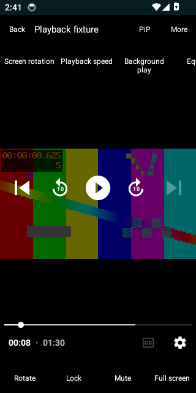
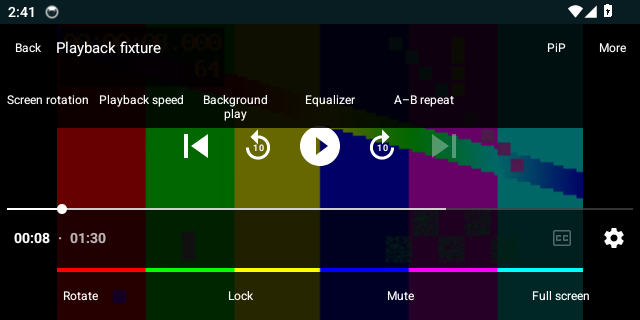
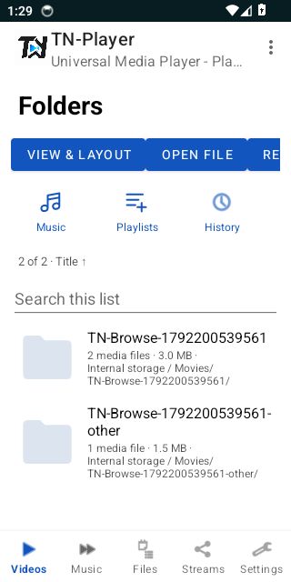
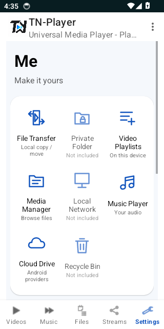

01 / VIDEO AND MUSIC
Library, folders, and resume
Play local video and audio in portrait or landscape. Browse folders with counts, switch list or grid, sort, and pick up a file at its saved position.
Android media player
TN-Player, also known as Noor E Sahar, plays video, music, and direct streams on your Android device. There is no account and no cloud library. This page is the project home: a testing download, the source, and a browser player for files already on your device.
Version 1.0.0 · Development APK · Android 5.0+
A local player built on Media3. These are the pieces that exist in the app today, not a catalog of services.
01 / VIDEO AND MUSIC
Play local video and audio in portrait or landscape. Browse folders with counts, switch list or grid, sort, and pick up a file at its saved position.
02 / DIRECT STREAMS
Open a direct HTTPS or RTSP media URL. HLS, DASH, and SmoothStreaming modules are included. A normal website address is not treated as a stream. Plain HTTP is blocked.
03 / PLAYER TOOLS
Speed from 0.25× to 4×, A-B repeat, sleep timer, bookmarks, favorites, external subtitles, aspect ratio, gestures, and picture-in-picture on Android 8 and later.
04 / FILES
Choose a folder, then copy, move, rename, share, or delete with confirmation. Create or extract ZIP archives inside the published size and path limits. Direct HTTPS downloads use Android DownloadManager.
05 / PRIVACY
There is no Firebase, advertising ID, or sign-in. Media stays where you put it. Network addresses the app stores are encrypted on the device. A stream you choose still contacts that server.
06 / ON THIS SITE
The web player opens files from this device in the tab. It can queue them, change speed, repeat, sleep, and show WebVTT or plain SRT captions. It does not upload them.
Android 14 emulator captures from 17 October 2026, source 5a8c4a9. These are real screens, not mockups. Folder names and the color bars are test files. All reference screens.




Version 1.0.0 for Android 5.0 and later. Package com.tplayer.mediaplayer. This is a debug APK for testing, not a Play Store release.
SHA-256 checksum. The checksum loads from SHA256SUMS.txt when this page is online.
Compare the checksum before you install. Debug builds can be signed with a different key than an older test install. Android may refuse the update. Copy anything you need before uninstalling. There is no cloud copy of your library.
The web player is a companion on this site. Choose a file, or drop one on the page. You can queue up to 100 files, set speed, repeat, a sleep timer, picture-in-picture where the browser allows it, and WebVTT or plain SRT captions. Resume position for the same file is kept in this tab only.
Nothing is uploaded. The page does not connect to a streaming service. Browser codecs are narrower than the Android app. Styled ASS and SSA captions are not rendered here.
No. It plays media on your device and direct stream URLs you enter. It does not host a catalog.
The Android app reads local files and the URLs you add. The web player keeps the file in the browser tab. A stream you choose contacts that server. Embedded passwords in stream URLs are rejected.
Android 5.0 (API 21) and later. The project compiles against API 34. Picture-in-picture needs Android 8 or later.
The download is a debug testing build. Its signing key can differ from an older test build. Uninstalling the older copy may be required. Save what you need first.
The repository is github.com/Tajoor621/TN-Player. Build instructions are in the README. Publishing a new APK is manually gated while feature work is still open.
Gold headphones and a cyan play symbol, used on the home screen, the playback widget, and this site.
Development preview. This page distributes an Android testing build. It is not a production release. Signing may differ from a build you already installed. One Android feature prompt is still open before the deferred APK publication. This site update does not replace that build.